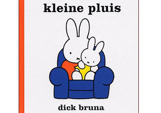

kleine pluis
nijntje is heel blij en danst in het rond
de papa en mama van nijntje zijn in verwachting
nijntje wordt een grote zus
nijn maakt vast een paar cadeaus
voordat haar kleine broertje of zusje geboren is
en daar is kleine pluis wat is het klein
nijn is al zo groot en mag ook
de kleine pluis eventjes op schoot
dat word trakteren op beschuit met muisjes
wat is het fijn een grote zus te zijn!